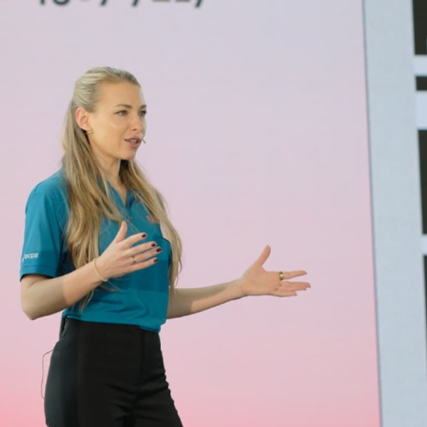

Mike Zaschka, Independent SAP Solution Architect, Developer and Consultant
9:00–9:10
Audimax
Officially kick off UI5con with us! Join the opening session for welcome remarks, an overview of the event, and a look ahead at what's in store.
Frederic Berg, SAP
9:10–9:40
Audimax
The UI5con 2026 Keynote
Stefan Beck, SAP SE
Peter Muessig, SAP
9:50–10:35
W1/W2
In this talk I would like to present ways to integrate agentic insights into your Fiori app. Not only will I show you how to let agents do the OCR on an invoice, I will also show you how to use it to get insights into the relevance of the invoice, or how to interpret an image and get it to gauge the relevance of the attachment to your business object. Your users are going to love having quick insights in uploaded documents without having to open everything one by one and judging it themselves. I will be using n8n as the task runner for this.
Jorg Thuijls, Shebang Software
Katan Patel, Shebang Software
9:50–10:35
Audimax
In this session we will give a large update about all the different tools around UI5 introduced newly since last UI5con or got significant new features. - UI5 MCP Server: This tool was released in late summer 2025 to offer LLMs UI5 expertise. When using AI when developing UI5 projects the UI5 MCP server is a must have for developers. We will give a short introduction in this new tool and show new features added since the UI5ers live session covered this tool and how easy it is to migrate legacy projects to the latest best practices. - UI5 CLI: On UI5con 2025, we gave a preview on features to come for UI5 CLI. Over the last year, the team made significant progress on major updates for UI5 CLI (component type, incremental build and many more). Therefore, we would like to share further updates with the community.
Florian Vogt, SAP
Tommy Lam, SAP
9:50–10:50
W3
This hands-on workshop guides developers through practical accessibility fixes on a pre-provided UI5 application using official UI5 documentation, accessibility tools, and AI-powered assistants. Participants will work in small groups or individually to identify real accessibility issues (semantic markup, ARIA roles, keyboard navigation, focus management, color contrast, and screen reader behavior) and apply concrete fixes. The session begins with a short orientation to core accessibility principles and the UI5 accessibility features, followed by a structured troubleshooting workflow: reproduce the issue, consult UI5 docs and best practices, run automated and manual tests (axe, Lighthouse, NVDA/VoiceOver), and implement fixes. Throughout, we’ll demonstrate how AI can accelerate discovery and remediation—suggesting code changes. Attendees will leave confident in how to handle common accessibility issues: how to reproduce and diagnose problems, where to search authoritative guidance (UI5 docs, WAI-ARIA, WCAG, testing tool docs), which tools and techniques to use (automated scanners, screen readers, keyboard testing, AI). ⚠️ Please come prepared! This is a hands-on session — to make the most of your time with us, please complete the prerequisites before the workshop. Setup instructions and the pre-requirements are in our repo: 👉 https://github.com/SAP-samples/ui5con-2026-a11y-hands-on/blob/main/hands-on-lectures/prerequisites.md

Ivaylo Plashkov, SAP
Nikolay Kolarov, SAP
10:55–11:40
W1/W2
In this session we want to show you some of our solution ideas we have evaluated regarding offline functionalities. We’d also love to have a discussion with you. We want to hear your opinions or scenarios when it comes to offline modes in your UI5 applications. Join us and share your experiences and expectations with us.
Viktor Sperling, SAP
Lars Kissel, SAP
10:55–11:40
Audimax
Learn what’s new in SAP Fiori elements V4, Runtime AI features, and My Home. See how annotation-driven UIs accelerate app delivery while full flexibility for the target picture. Explore the latest news around My Home as a personalized launchpad where insight cards surface KPIs, tasks, and recommendations. Experience our latest Runtime AI features to elevate your workflow with smart helpers.
Ian Quigley, SAP
Klaus Keller, SAP
11:00–12:00
W3
Modernize a legacy UI5 app end-to-end using UI5 linter — from your first ui5lint report to a clean, CSP-compliant, future-proof codebase. You'll auto-fix what you can, manually resolve the rest, and wire linting into your workflow and CI so regressions never sneak back in. Prerequisites: Laptop with Node.js (LTS) and Git installed, a code editor, and basic UI5 development experience.
Matthias Oßwald, SAP
Max Reichmann, SAP
11:50–12:35
W1/W2
The way users interact with software is changing and AI is reshaping not just how we build apps, but how people experience them. The Model Context Protocol (MCP) bridges this gap on a technical level, giving AI hosts a standardized way to connect to backend data and services. With MCP Apps, this now extends to UI and UX too: forms, dashboards, and workflows rendering directly inside AI hosts like Claude, VS Code Copilot, or SAP Joule. In this session, we look at what this means for UI5 developers. We'll examine Joule's current approach to surfacing business UI, its benefits and limitations, and explore why MCP Apps might offer a more flexible path forward. Because UI5 Web Components are built on web standards, they are a natural fit for this new world: rich, interactive business UIs inside AI conversations, backed by the same services that power our Fiori apps today.
Mike Zaschka, Independent SAP Solution Architect, Developer and Consultant
Marian Zeis, IT Consulting Marian Zeis
11:50–12:15
Audimax
UI5 is often thought of mainly as a control library, but it’s much more than that: It's a very flexible framework that can be extended and used with many different technologies. In this demo, we show how a UI5 application can integrate third-party libraries and external web components. Using a simple supermarket app as an example, we integrate Three.js into a custom UI5 control to render a 3D model of the supermarket and guide customers to a product’s location. We also include a custom web component that connects to a Bluetooth printer and prints directions to the selected product. The demo illustrates how UI5 can easily use npm packages, modern tooling, and reusable web components, making it possible to extend UI5 applications beyond the standard UI controls.

Nico Schoenteich, SAP
13:45–15:45
W3
This hands-on workshop demonstrates how to build flexible, enterprise-grade user interfaces by combining freestyle SAPUI5 and SAP Fiori elements technologies. Participants work with a CAP backend based on the SFLIGHT sample service to construct a travel dashboard featuring object-centric design. Prerequisites: Laptop, being able to login to SAP Business Application Studio via provided workshop-account, alternatively local installation of VS Code, Git, and latest SAP Fiori tools.
Christoph Gollmick, SAP
Ian Quigley, SAP
Klaus Keller, SAP
Tilman Hess, SAP
13:45–14:10
W1/W2
Testing SAP Fiori applications locally often requires dealing with the FLP Sandbox - a solution that has grown organically over the years. Developers frequently struggle with complex, SAP-internal configuration requirements, copy-pasted boilerplate code, and sparse documentation. With UI5 2.x introducing significant API changes, many of these patterns have become deprecated, forcing both the FLP and developers to adapt. This session introduces the completely redesigned FLP Sandbox 2.0 - a modern, stable, and easy-to-use solution for local Fiori application development and testing. What you will learn: - Why a new sandbox was necessary and the core principles behind its design - The new declarative configuration approach that works out-of-the-box with minimal setup - High-level architecture including the boot manifest mechanism - How the sandbox supports both UI5 1.x and 2.x through a unified bootstrap The highlight of this session is a live migration demonstration, where we transform existing applications from the legacy sandbox to the new approach. Whether you are new to Fiori development or a seasoned UI5 developer preparing for the 2.x migration, this session provides practical guidance to streamline your local development workflow. You will leave with a clear understanding of how to adopt the new sandbox and reduce technical debt in your projects.
Johannes Gluch, SAP
Dominik Heim, SAP
13:50–14:35
Audimax
AI is transforming how we build UI5 applications. In this deep dive, I'll share my hands-on experience with AI across the entire UI5 development lifecycle and show you what our future looks like. First, we'll explore AI-driven development tools. From GitHub Copilot to Claude Code with MCP servers (including UI5's own MCP server), I'll demonstrate how these tools are changing our workflow. The result? My most ambitious side projects, with the least manual coding ever. But why stop at AI helping us write code? Why not generate the UI directly at runtime? By combining CAP with AI, we can generate complete UI5 views - forms and tables - on the fly based on entity metadata, with server-side pre-rendering for instant delivery. Could this be how we build UIs in the future? And while we wait for that future, let's bring AI into our UI5 apps today. We'll discuss practical enhancements for end users: text optimizers for long-form input, smart filters like SAP's Fiori Elements approach and more. After this session, you'll have practical insights on using AI tools effectively, inspiration for AI-generated UIs, and concrete ideas to bring AI features into your own UI5 apps. The question isn't whether AI will change UI5 development - it already has. The question is: are you ready to make the most of it?

Wouter Lemaire, Independent Consultant
14:20–14:45
W1/W2
Test automation in UI5 is powerful but expensive: writing and maintaining OPA5 tests requires deep technical skills, a lot of time, and constant refactoring when the UI changes. Our goal was to remove this barrier completely and enable teams to transform real user behavior into automated tests – without writing code. That is why we built AI-powered test generation for Fiori Apps: to drastically reduce test creation time, enable non-developers to contribute, and let experts focus on quality, architecture, and innovation instead of repetitive scripting. This spottalk explains the motivation behind the AI approach, how the first experimental version works, and what it means for the future of UI5 quality assurance.
Jennifer Häfner, Simplifier AG
15:00–15:45
W1/W2
In this session, we will show new features provided for all models of UI5 as well as features specifically provided for the OData V4 model. These features include bound filters, the negation in Filters, support for Edm.Decimal with scale="floating" and in that context OData V4.01, the usage of $count on a collection valued navigation property in lists or how to use the preference ContinueOnError with OData V4. We will also provide an outlook on combining data aggregation and editing.
Peter Buchholz, SAP
Thomas Chadzelek, SAP
Mathias Uhlmann, SAP
15:00–15:45
Audimax
In a recent large full-stack project built with UI5 and CAP, we implemented a hybrid UI approach: freestyle UI5 as the baseline, combined with SAP Fiori elements building blocks (flexible programming model). This differs from the more common approach of using SAP Fiori elements as the baseline, using custom pages and sections where needed. This field report will answer the following questions: When should I go freestyle UI5 first? When Fiori elements first? What application structure is required for each approach? Which tools and documentation can I use?
Nico Schoenteich, SAP
16:10–16:35
Audimax
Writing comprehensive OPA5 integration tests for SAP Fiori elements applications has historically been a manual, time-consuming process, as standard generators typically provide only a "hello world" test scaffold. By leveraging the SAP Fiori elements test library and OData service metadata, we can now bridge this gap by automatically generating OPA5 tests that cover the specific features enabled by your metadata out of the box. This session introduces a new approach to test automation where the initial heavy lifting is handled by SAP Fiori tools, allowing developers to focus their efforts on testing unique business logic and custom extensions. We will explore how metadata-driven generation ensures higher test coverage from day one while maintaining the flexibility to layer on manual enhancements. Join us to see how you can slash your testing overhead and move from empty test files to fully verified applications in a fraction of the time.
Dominik Heim, SAP
16:10–16:35
W1/W2
Ever wondered how UI5 Flexibility works under the hood? In this session, we will give an overview how Flexibility is built into the UI5 framework and talk about some key principles on how UI5 Flexibility works, deep-diving into some parts of the UI5 framework that are crucial for Flexibility. We will also give some examples on how it could break and how to avoid that.
Kevin Edinger, SAP
Arthur Trauter, SAP
16:10–17:10
W3
Chrome's built-in AI is here, it's free, and it runs right in the browser. In this fast-paced session, we'll kick things off by showing you how to quickly scaffold and build a UI5 app using AI-powered tools and modern dev workflows — so you spend less time on boilerplate and more time on what matters. Then we'll dive into Chrome's AI APIs — Prompt, Summarization, Translation, and more — and wire them directly into your app to bring it to life with real intelligence. No backend. No API key. Just you, your browser, and some seriously smart UI5 components.
Martin Hristov, SAP
Adrian Bobev, SAP
16:45–17:10
W1/W2
TypeScript has firmly arrived in the UI5 ecosystem. However, parts of the traditional model APIs are still rooted in untyped JavaScript patterns, which can lead to runtime errors and limited tooling support. This talk introduces TypedJSONModel, a strongly typed extension of JSONModel that enhances type safety and developer experience in UI5 projects. TypedJSONModel wraps the existing JSONModel with types, enabling compile-time validation and rich IDE support such as autocompletion and type inference. It helps catch invalid paths and type mismatches before the application runs. The session highlights practical usage patterns and shows how TypedJSONModel reduces subtle bugs and supports safer refactoring in UI5 applications.
Martin Broede, Sedevo IT Consulting GmbH
Viktor Sperling, SAP
16:45–17:10
Audimax
What happens when you want to digitize construction site processes end to end instead of building isolated apps? In this talk, I will show how we built and run a software solution with more than 40 Fiori elements apps for master data and administration, plus 10 freestyle UI5 process apps for operational workflows, all on top of one SAP CAP backend. The business goal behind this landscape is clear: digitizing construction sites, warehouse interactions, article movements, returns, picking, and settlement processes in one coherent platform. The session focuses on the architectural decisions and trade-offs behind that setup: where Fiori elements gave us speed and consistency, where freestyle UI5 was the better fit, and how we kept both worlds aligned through shared models, a reusable UI5 library, OData V4, MDC components, common error handling, personalization, and a coherent deployment model on SAP BTP. Instead of theory, this is a real project story from the construction industry, with concrete patterns, pitfalls, and lessons learned from scaling UI5 in an enterprise environment. Attendees will leave with practical guidance for structuring larger software solutions that connect back office administration with field and site processes, without ending up with duplicated code, fragmented UX, or an unmaintainable app portfolio.
Christoph Ueberle, cbs Corporate Business Solutions Unternehmensberatung GmbH
Marvin Weitz, cbs Corporate Business Solutions Unternehmensberatung GmbH
17:20–17:50
Audimax
Your chance to ask the top heads of UI5 anything! Any question (of likely general interest) is welcome. The open Q&A round, introduced and very popular last year
Frederic Berg, SAP
Stefan Beck, SAP SE
Peter Muessig, SAP
Klaus Keller, SAP
Ian Quigley, SAP
17:50–18:00
Audimax
Wrap up UI5con with final announcements and a look ahead to the future.
Frederic Berg, SAP